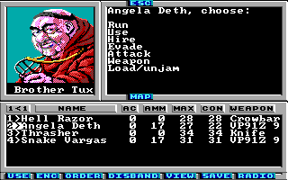

Game Tutorial Step 10: Adding random encounters
Action class 15 (f) is a special action class. You don't need to connect this action class to a square because the game will do this randomly (That's why it's called random encounter). In this example we will add two easy to beat monsters which you will encounter from time to time when you travel around the map.
First of all we need to define the monsters. The monsters section must be in front of the strings section. Here is the code:
<monsters>
<monster id="0" />
<monster id="1"
name="Visa \nman\nmen\n"
ac="1"
experience="15"
skill="10"
fixedDamage="0"
randomDamage="1"
maxGroupSize="2"
weaponType="2"
monsterType="3"
picture="32" />
<monster id="2"
name="Brother Tux"
ac="2"
experience="20"
skill="15"
fixedDamage="0"
randomDamage="2"
maxGroupSize="1"
weaponType="2"
monsterType="3"
picture="31" />
</monsters>
Please note that the first monster (The monster with id 0) must always be empty. This has the same reason as for the strings. Actions may refer to monster 0 which means no monster.
When you take a look at the name of the first monster you can see how singular and plural names are built. If you need monster names to be different when the group consists of one member or more members then you must split the name into four parts separated with the special character \n. The first and the last part is used for singular and plural names. The second part is only used for singular and the third part is only used for plural.
Now you have defined the monsters but there is more to do. Next step is using action class 15 to create temporary space for the state of random encounters. These actions can also be used to provide some more information for an encounter but it's enough if you just know that you should define an action in action class 15 for each random encounter you want to have on the map at the same time. This means when you flee from a battle and you have two actions in action class 15 then you can encounter another fight. But if you flee from this one, too, then you have your freedom until you go back to the the monsters and kill them.
So here they are, the actions in action class 15:
<actions actionClass="0xf"> <encounter id="0" message="15" newActionClass="0" newAction="0" /> <encounter id="1" message="15" newActionClass="0" newAction="0" /> </actions>
They do not much. They just define that string 15 will be displayed when the fight begins. String 15, here it is:
<string id="15">A freak crawls out of his hole. It's better you bring him back...\r</string>
But there is more to do. You may remember that we have disabled random encounters in the info tag. Now it's time to re-enable them. To do this first set lastMonster to 2. This defines that the first two monsters are used for random encounters. All other monsters are only used in fixed encounters. You see: Random encounter monsters always must be at the beginning of the monsters table. Set maxEncounters to 2. You should always set this value to the number of random encounter actions you have created in action class 15. Later versions of the Wasteland Suite may set this value automatically when it is confirmed that there is no sense in using a different value here. Set encounterFrequency to 50. This defines that the chances for a random encounter is 1 to 50.
Now pack the game file, run the game and walk around a bit until you encounter the Visa Man or Brother Tux.
You can download the current state of the map here: map01.xml.
